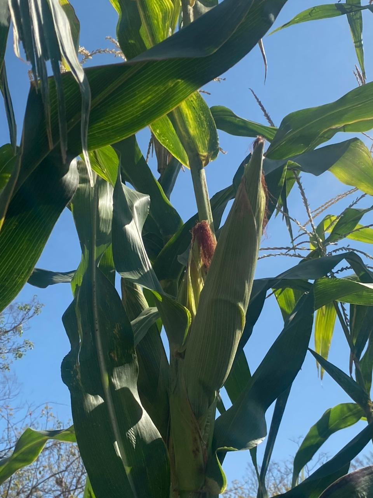

Bienvenido al Portal Informativo del área de Producción Agrícola y Pecuaria
En el CBTA 140, nos enorgullece formar parte de una región con una sólida vocación agrícola y pecuaria. Nuestro portal está diseñado para brindar información actualizada y útil sobre las actividades productivas que impulsan el desarrollo económico y social de nuestra comunidad.
¿Qué es Producción Agrícola y Pecuaria?
La producción agrícola y pecuaria es el conjunto de técnicas, conocimientos y tecnologías que permiten obtener alimentos, fibras, combustibles y materias primas a partir del trabajo con la tierra y los animales. En nuestro centro educativo, se enseña a los estudiantes a aplicar prácticas sustentables, usar nuevas tecnologías y comprender la importancia de estos sectores para la economía local y nacional.